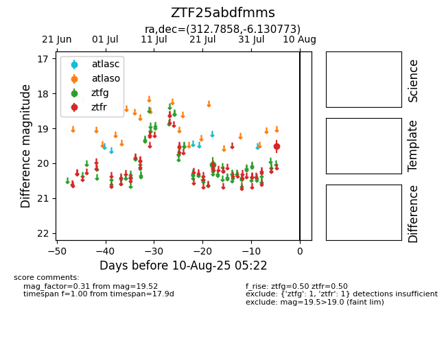

Target ZTF25abdfmms at 2025-08-06 17:45, see:
FINK: fink-portal.org/ZTF25abdfmms
Lasair: lasair-ztf.lsst.ac.uk/objects/ZTF25abdfmms
ALeRCE: alerce.online/object/ZTF25abdfmms
alt names
ZTF25abdfmms (ztf,fink)
coordinates:
equatorial (ra, dec) = (312.7858,-6.13077)
galactic (l, b) = (41.5847,-29.35122)
photometry
last ztfg=20.03
1 ztfg detections
